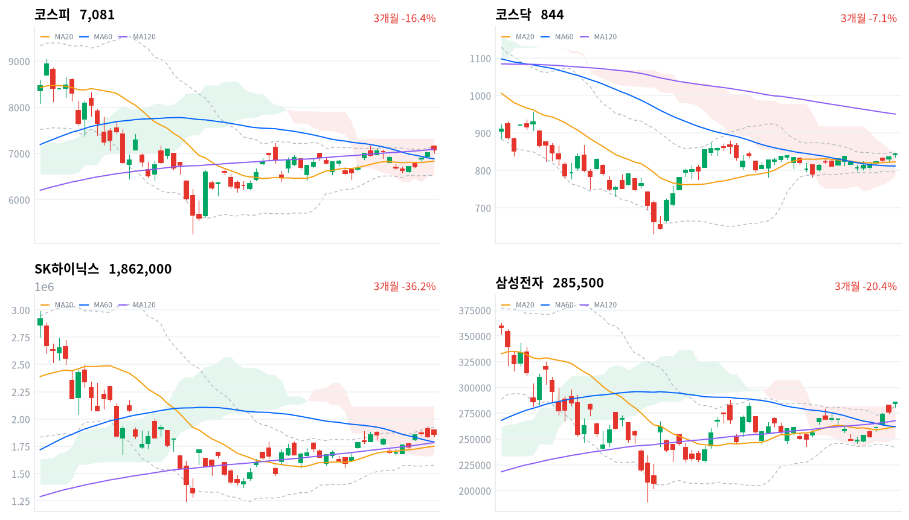

코스피는 추석 연휴 전 마지막 거래일에 0.90% 오른 7,080.92로 마감했다. 삼성전자·SK하이닉스 등 반도체 대형주가 지수를 떠받쳤다.
그러나 WICS 12개 섹터 가운데 9개가 내렸고, 외국인과 개인은 함께 순매도했다(당일 잠정). 휴장 중 열리는 미·중 정상회담이 다음 방향을 가를 첫 재료다.
코스피는 오늘 0.90% 오른 7,081로 마감했다. 시가 7,154가 그대로 하루 고가였고, 지수는 오전 11시반 7,026까지 밀렸다가 마지막 30분에 되올랐다. 상승을 끈 것은 반도체와반도체장비 업종(+2.79%)이었고, 171종목 가운데 137종목이 함께 올랐다. 나머지 업종은 어땠을까? WICS 12개 섹터 가운데 건설(-4.66%)·철강소재(-2.74%)·방산(-2.40%) 등 9개가 내렸다. 국내 증시는 내일부터 이틀 쉬고 9월 28일에 다시 열린다.
채권시장은 오늘 주식시장과 다른 값을 매겼다. 회사채 AA- 3년물과 국고채 3년물의 금리차는 68.3bp로 하루 새 1.0bp 넓어졌고, 최근 2년(536거래일) 가운데 이보다 넓었던 날이 44일뿐이다. 코스피가 7,000선 위에서 마감한 날에도 신용 위험의 값이 내려오지 않았다면, 이 상승을 넓은 위험선호의 확인으로 읽을 수 있을까? 우리는 오늘 지수 상승을 반도체 한 업종의 이익 재평가로 좁혀 본다.
이 해석을 받치는 관측은 둘이다. 반도체를 뺀 섹터 대부분이 내렸고, 외국인은 코스피에서 4,942억원을 순매도했다(당일 잠정). 재료도 메모리 쪽에 몰려 있었다. 파이낸셜뉴스는 전일 미국장에서 마이크론이 5% 급등했다고 전했다. 그렇다면 다른 설명은 무엇일까? 연휴와 미·중 정상회담을 앞두고 최근 강했던 종목군을 정리한 하루짜리 포지션 조정일 수 있고, 신용 스프레드가 넓어진 것도 회사채 시장 안의 수급 때문일 수 있다. 두 설명을 가를 자료는 연휴 뒤 첫 세 세션의 섹터 흐름과 신용 스프레드다. 반도체 밖으로 상승이 번지고 스프레드가 66bp 아래로 좁아지면 넓은 위험선호 쪽 설명이 맞다.
코스피 노출은 다음 세션까지 유지한다. 반도체 업종의 고른 상승은 지수를 지탱할 근거가 되지만, 반도체 밖으로 노출을 넓힐 근거는 아직 없다. 오늘은 새 상품을 대지 않는다. 그럼 무엇을 기다릴까? 휴장 이틀 사이 미·중 정상회담에서 반도체 규제와 11월 10일 만료되는 관세 휴전이 어떻게 정리되는지, 그리고 그 결과가 9월 28일 첫 세션의 외국인 수급으로 이어지는지를 본다.
코스피가 60일 이동평균인 6,881 아래에서 마감하면 이 판단을 다시 본다. 오늘 종가보다 약 2.8% 낮은 자리다. 이 선을 내주면 반도체가 지수를 떠받친다는 전제가 흔들렸다는 뜻이다.
판단 원장에는 오늘과 비교할 직전 판단이 없다. 원장 기록이 이번 회차에서 처음 시작되기 때문에 기계 판정은 「판정불가」다. 원장 밖에서 보면 어떨까? 9월 21일 발행본은 코스피가 60일 이동평균(당시 6,904)을 지키는 동안 노출을 유지한다고 적었고, 오늘 종가는 그 선 위라서 그 판단은 그대로 이어간다. 다만 그때 기다린 외국인 수급 복귀는 오지 않았다. 외국인은 9월 22일 494억원 순매수에 그쳤고, 오늘은 순매도로 돌아섰다(당일 잠정).
9월 22일(현지시간) 미국 3대 지수는 엇갈렸다. 나스닥은 0.45% 올라 사상 최고치를 다시 썼고, S&P500은 보합, 다우는 0.36% 내렸다.
같은 날 아시아에서는 대만가권이 0.92% 올랐고 항셍(-0.83%)과 상해종합(-0.34%)은 내렸다. 닛케이는 일본 휴장으로 9월 18일 마감(+1.38%)이 가장 최근 값이다. 네 지수의 평균은 0.28% 상승이었고, 코스피는 이보다 0.62%포인트 더 올랐다.
시가는 전일 종가 7,018보다 136포인트 높은 7,154였다. 그리고 이 시가가 그대로 오늘의 고가가 됐다. 한국 정규장 시간대에 미국 선물은 S&P500 선물(ES)이 0.08%, 나스닥100 선물(NQ)이 0.04% 올라 사실상 제자리였다.
코스피는 개장 직후부터 밀려 오전 11시반 7,026까지 내려왔다. 오후에는 7,030~7,050 사이를 오갔다. 마지막 30분에 7,079로 올라서며 하루를 마쳤다.
코스닥은 오전 9시반 846을 찍은 뒤 11시에 837까지 밀렸다가 844로 마감했다. 원/달러 환율은 개장 무렵 1,347원이 저점이었고 오후 3시반에는 1,360원까지 올랐다. 지수가 오른 날에도 원화는 약해졌다.
오늘은 반도체가 지수를 끌고 나머지 업종이 뒤로 물러선 하루였다. 파이낸셜뉴스는 삼성전자가 3.25% 올라 지수를 방어했다고 전했다. 같은 매체는 두산에너빌리티(-5.55%)·한화에어로스페이스(-3.41%)·HD현대중공업(-3.18%)이 내렸다고 보도했다.
뉴스1은 개인이 장 초반 강세에 매물을 내놓은 전강후약 흐름을 짚었다. 연휴와 정상회담을 앞둔 차익실현이 겹쳤을 수 있지만, 매도 주체의 의도를 가를 자료는 없다. 시간외 거래 자료는 이번 수집에 없다.
코스피는 7,081로 마감해 사흘째 7,000선 위를 지켰다. 최근 20거래일 고점인 7,172에는 91포인트 못 미치고, 120일 이동평균(7,091)은 여전히 바로 위에 있다. 오늘 고가와 저가의 차이는 139포인트로, 시가가 곧 고가가 된 전형적인 전강후약 하루였다.
| 지수 | 종가 | 등락률 | 시가 | 고가 | 저가 | 전일 종가 |
|---|---|---|---|---|---|---|
| 코스피 | 7,080.92 | +0.90% | 7,153.99 | 7,153.99 | 7,014.98 | 7,017.91 |
| 코스닥 | 844.48 | +1.21% | 841.73 | 847.35 | 835.46 | 834.38 |
코스피는 시가 7,154에서 출발해 오전 내내 밀렸다. 30분봉 기준으로는 오전 11시반 7,026이 저점이었고, 장중 저가는 7,015였다. 오후 1시 이후 7,030~7,050 사이를 오가던 지수는 오후 3시 7,050에서 마지막 30분 동안 29포인트가량 올라 7,079에 닿았다.
코스닥은 시가 842에서 출발해 오전 9시반 846까지 올랐다. 장중 고가 847은 최근 20거래일 고점과 같은 값이다. 이후 오전 11시 837까지 밀렸다가 오후 들어 되올라 844로 마쳤다.
두 지수 모두 오전에 밀리고 오후에 되오른 모양은 같았다. 다만 코스피는 시가를 끝내 회복하지 못했고, 코스닥은 시가보다 높은 자리에서 마감했다. 같은 날 반도체 밖 대형주는 약해, 두산에너빌리티·한화에어로스페이스·HD현대중공업이 모두 3% 넘게 내렸다.

코스피·코스닥·SK하이닉스·삼성전자 3개월 일봉에 이동평균(20·60·120)·볼린저밴드·일목균형표 구름대를 오버레이했다. 상승 캔들은 녹색, 하락 캔들은 적색으로 표시된다.
코스피(7,081)는 20일선(6,833)과 60일선(6,881) 위, 120일선(7,091) 바로 아래에서 마감했다. 이동평균은 역배열이고 지수는 일목 구름 안에 있다. 120일선을 넘어서면 볼린저 상단(7,146)과 20일 고점(7,172)이 다음 저항이고, 60일선을 내주면 20일선이 다음 지지선이 된다.
코스닥(844)은 이동평균 배열이 혼조인 채 일목 구름 상단(848) 바로 아래에서 마감했다. 구름 상단을 넘어서면 볼린저 상단(849)까지 열린다. 반대로 일목 기준선(827)을 내주면 20일선(823)이 다음 지지선이다.
SK하이닉스(186만원)는 20·60·120일선을 모두 웃돌았지만 배열은 혼조이고 일목 구름 안에 있다. 볼린저 상단(193만원)을 넘으면 위쪽이 열린다. 60일선(179만원)을 내주면 20일선(175만원)이 다음 지지선이다.
삼성전자(285,500원)는 볼린저 상단과 일목 구름 상단(둘 다 28만2천원 부근)을 함께 넘어 20일 고점을 새로 썼다. 이 자리를 지키면 구름 위 흐름이 이어진다. 다시 내려오면 20일선(26만2천원)까지 지지가 비어 있다.
기술적 레벨로 보면 지수는 반도체 두 종목보다 한 걸음 뒤처져 있다. 삼성전자는 이미 구름 위로 올라섰는데 코스피는 120일선 아래에 머물렀다. 반도체 밖 종목들이 지수를 붙잡고 있다는 뜻이며, 이 격차가 연휴 뒤 좁혀지는 방향이 지수의 다음 구간을 정한다.
위 레벨은 이동평균·볼린저밴드·일목균형표와 스윙 고저를 기계적으로 계산한 값이며 투자 권유가 아니다.
| 주체 | 순매수(억원) |
|---|---|
| 개인 | -14,649 |
| 외국인 | -4,942 |
| 기관 | +3,189 |
| 주체 | 순매수(억원) |
|---|---|
| 개인 | +275 |
| 외국인 | -462 |
| 기관 | +76 |
코스피에서는 개인이 1조4,649억원, 외국인이 4,942억원을 순매도했다(당일 잠정). 순매수한 쪽은 기관(3,189억원)뿐이었다. 지수가 오른 날 외국인과 개인이 함께 판 것이다.
반도체 대형주가 오르는 동안 외국인이 판 것은 오늘 지수 상승이 외국인 자금에 기대지 않았다는 뜻이다. 다만 외국인 매도가 반도체 종목에서 나왔는지 다른 업종에서 나왔는지는 종목별 투자자 자료가 없어 가를 수 없다.
개인 순매도는 사흘째 이어졌지만 규모는 줄었다. 9월 21일 3조1,850억원에서 9월 22일 1조5,643억원, 오늘 1조4,649억원(당일 잠정)으로 내려왔다. 연휴를 앞둔 현금화가 이 흐름에 섞였을 수 있지만, 이를 가를 자료는 없다.
코스닥은 개인 275억원, 기관 76억원 순매수, 외국인 462억원 순매도로 세 주체 모두 규모가 작았다(당일 잠정). 코스닥의 1.21% 상승은 뚜렷한 수급 주체 없이 나온 셈이다.
프로그램 매매·장중 누적 수급 자료는 2026년 9월17일 네이버 금융 개편으로 소스가 폐지돼 오늘 발행에서도 결측이다. 대체 소스가 확보되면 다시 싣는다.
| 순위 | 종목/ETF | 구분 | 거래대금 | 비고 |
|---|---|---|---|---|
| 1 | 삼성전자 | 개별주 | 5.50조원 | - |
| 2 | SK하이닉스 | 개별주 | 5.37조원 | - |
| 3 | 반도체 테마 ETF | 테마·롱 | 1.77조원 | 28종 합산 |
| 4 | 삼성전자우 | 개별주 | 1.26조원 | - |
| 5 | SK스퀘어 | 개별주 | 0.75조원 | - |
| 6 | 삼성전기 | 개별주 | 0.74조원 | - |
| 7 | KODEX CD금리액티브(합성) | 단기금리·현금성 | 0.54조원 | - |
| 8 | 두산에너빌리티 | 개별주 | 0.38조원 | - |
| 9 | SK하이닉스 레버리지 | 레버리지·롱 | 0.31조원 | 5종 합산 |
| 10 | NAVER | 개별주 | 0.23조원 | - |
단위 백만원 원본을 조 단위로 환산. 같은 기초자산 ETF는 방향별로, 같은 테마 섹터 ETF는 테마별로 묶었으며 코스피200·코스닥150 추종 지수 ETF 및 그 레버리지·인버스, 해외 ETF는 제외했다.
삼성전자·SK하이닉스·삼성전자우 세 종목의 거래대금을 합하면 12.13조원이다. 반도체 테마 ETF 28종을 합친 1.77조원의 6.8배로, 거래는 이번에도 바스켓보다 개별 종목 쪽에서 훨씬 활발했다.
SK하이닉스 레버리지(0.31조원, 5종 합산)가 상위 10위 안에 들었고, 인버스 상품은 하나도 없었다. 반도체가 오른 날 상승 방향 상품의 거래가 더 활발했다는 관측은 가능하다. 다만 상품별 투자자 자료가 없어 이것을 개인의 방향성 베팅으로 단정하지는 않는다.
두산에너빌리티는 0.38조원으로 8위에 들었다. 오늘 크게 내린 종목이 거래대금 상위에 오른 것이라, 매도와 매수가 함께 몰린 자리였다. KODEX CD금리액티브(합성)(0.54조원)는 CD금리를 따라가는 단기 자금 대기용 상품이라 방향성 베팅과는 결이 다르다.
SK스퀘어(0.75조원)와 삼성전기(0.74조원)는 반도체 밸류체인과 맞닿은 종목이다. 두 종목까지 더하면 상위 10위 가운데 여섯 줄이 반도체와 이어져 있다. 오늘 거래가 어디로 쏠렸는지 이 표가 분명하게 보여 준다.
WICS 섹터 막대에서 오늘 오른 섹터는 반도체(+2.71%)·2차전지(+0.14%)·증권(+0.11%) 셋뿐이었다. 건설(-4.66%)이 가장 많이 내렸고 철강소재(-2.74%)·방산(-2.40%)·조선(-1.95%)이 뒤를 이었다. 건설은 최근 한 달 수익률이 +3.80%로 반도체 다음이었던 섹터라, 오늘 하락에는 차익실현이 섞였을 수 있다.
네이버 업종분류 기준으로 보면 가장 폭넓게 오른 업종은 반도체와반도체장비(+2.79%)였다. 171종목 중 137종목이 올라 상승 종목 비중이 80%에 달했다. 석유와가스(+3.13%, 19종목 중 11종목 상승)도 절반 넘는 종목이 함께 올랐다.
60개 업종 가운데 38개가 올라 업종 수로는 오른 쪽이 많았다. 그런데 시가총액이 큰 WICS 섹터로 묶으면 오른 곳이 셋뿐이었고, 업종분류에서도 자동차(-1.13%)·자동차부품(-0.95%)·증권(-0.85%)은 내렸다. 작은 업종 다수가 올랐지만 지수에 무게가 실린 큰 섹터는 반도체를 빼고 대부분 약했다는 뜻이다.
가정용품 업종은 162.28% 상승으로 집계됐지만 오른 종목은 4개에 그쳤다. 업종 수익률로 읽기 어려운 이상값이라 해석에서 뺀다.
삼성전자와 SK하이닉스가 오늘도 거래대금 1·2위를 지켰다. 파이낸셜뉴스는 삼성전자가 3.25%, 삼성전자우가 4.02%, SK스퀘어가 3.97% 올랐다고 전했다. 전일 미국 마이크론의 급등 소식이 국내 메모리 대형주로 이어진 모양새다.
재경일보는 두산에너빌리티가 5%대 급락으로 마감했다고 전했다. 회사가 풍문 해명 공시를 냈지만 급락을 설명할 뚜렷한 악재는 드러나지 않았다는 보도다. CBC뉴스는 원전주가 함께 약했다고 전하며, 웨스팅하우스 지분 협상의 향방을 변수로 꼽았다.
한화에어로스페이스(-3.41%)와 HD현대중공업(-3.18%)도 내렸다고 파이낸셜뉴스는 보도했다. 방산·조선은 섹터 막대에서도 함께 내려, 개별 재료보다는 최근 강했던 대형주를 줄이는 흐름으로 보인다.
국고채 금리는 오늘 크게 내려 10년물이 6.9bp 내린 4.392%, 3년물이 3.4bp 내린 4.006%로 마감했고, 3년물은 4% 선에 바짝 붙었다. 원/달러 환율은 반대로 움직여, 개장 무렵 1,347원에서 오후 3시반 1,360원까지 올랐다. 채권은 강해지고 원화는 약해진, 결이 갈린 하루였다.
| 지표 | 금리 | 전일比(bp) | 기준일 |
|---|---|---|---|
| 국고채 3년 | 4.006% | -3.4 | 2026-09-23 |
| 국고채 10년 | 4.392% | -6.9 | 2026-09-23 |
| CD 91일 | 3.21% | 0.0 | 2026-09-23 |
| 회사채 AA- 3년 | 4.689% | -2.4 | 2026-09-23 |
| 한국은행 기준금리 | 3.00% | +25.0(전월比) | 2026-08 |
10년물에서 3년물을 뺀 장단기 금리차는 38.6bp로 하루 새 3.5bp 좁아졌다. 10년물이 3년물보다 두 배 가까이 더 내린 결과라, 장기물이 이끈 금리 하락이다. 이 금리차는 최근 2년의 한가운데쯤에 있다.
전일 미국 금리는 거의 움직이지 않았다. 10년물은 4.967%로 0.4bp 올랐고 2년물은 4.751%로 0.2bp 내렸다(9월 22일, 현지). 오늘 한국 장기물 강세는 전날 미국 금리에서 넘어온 것으로 보기 어렵다. 국내 요인을 따로 확인해야 하는데, 오늘 자료로는 그 요인을 특정할 수 없다.
회사채 AA- 3년물은 2.4bp 내려 국고채 3년물(3.4bp)보다 덜 내렸다. 그래서 신용 스프레드는 오히려 1.0bp 넓어졌다. 국고채가 강해진 날, 회사채는 그 강세를 다 따라가지 못했다.
국고채 3년물은 기준금리(3.00%, 8월 기준)보다 100.6bp 높은 자리로, 최근 2년 중 넓은 쪽 15% 안이다. 이 격차는 기준금리 위에 얹힌 프리미엄의 크기일 뿐, 앞으로의 정책 경로가 가격에 반영됐다고 단정할 근거는 아니다. CD 91일물은 3.21%로 제자리였다.
외국인이 주식을 순매도하고 원화가 약해진 날이지만, 이것을 외국인 채권 자금 이탈의 증거로 연결하지는 않는다. 오늘 국고채는 오히려 강했고, 주식 수급과 채권 자금은 따로 관측해야 하는 시장이다.
글로벌이코노믹과 파이낸셜뉴스에 따르면 트럼프 대통령과 시진핑 주석이 9월 24일(현지시간) 백악관에서 정상회담을 열고, 관세·희토류·AI·대만을 의제로 올린다. 두 매체는 11월 10일 만료되는 관세 휴전의 연장이 핵심이라고 전했다. 뱅크오브아메리카와 JP모건은 휴전 1년 연장, 제한적 관세 인하, 일부 반도체 라이선스를 가능한 결과로 제시했다.
이 회담은 두 경로로 한국 반도체에 닿는다. 대중 반도체 수출 규제가 풀리면 메모리 업체의 이익 경로가 열리고, 휴전 연장 여부는 통상 불확실성이라는 멀티플 경로를 건드린다. 미래에셋증권 김석환 연구원은 관세·희토류·반도체 규제가 핵심 변수이며 지수보다 정책 변화에 주목해야 한다고 파이낸셜뉴스에 밝혔다.
오늘 반도체가 2.79% 오른 것을 회담 기대의 선반영으로 볼지는 판단을 유보한다. 같은 날 미국 메모리주 강세라는 다른 재료가 있었기 때문이다. 회담 결과가 국내 증시가 쉬는 사이 나오므로, 9월 28일 첫 세션에서 반도체 업종과 외국인 수급이 어느 쪽으로 반응하는지가 확인 지점이다.
CBC뉴스는 두산에너빌리티·한전기술 등 원전주가 함께 약세를 보였다고 전하며, 웨스팅하우스 지분 투자 협상이 앞으로 국내 원전주에 어떤 영향을 줄지가 관심사라고 보도했다. 재경일보는 두산에너빌리티 급락을 설명할 뚜렷한 악재는 드러나지 않았다고 전했다.
협상은 해외 원전 수주 기대라는 이익 경로와, 협상 조건에 따른 불확실성이라는 멀티플 경로로 주가에 닿는다. 오늘 원전·방산·조선이 함께 내린 것은 협상 재료만으로 설명하기 어렵고, 연휴 전 강세주 정리와 섞여 있어 어느 쪽이 컸는지는 판단을 유보한다. 협상 결과 발표 일정은 미확정이다.
한국은행 기준금리는 8월 기준 3.00%로 7월보다 25bp 높다(한국은행 ECOS). 뉴시스가 전한 한은의 2026년 일정에 따르면 다음 통화정책방향 결정회의는 10월에 열린다. 오늘 새로 확인된 정책 변화는 없다.
국고채 3년물이 3.4bp 내렸지만, 이것을 금리 인하 기대의 선반영으로 읽을 근거는 없다. 10월 회의 전까지는 국고채 3년물과 기준금리의 격차가 좁아지는 방향인지를 본다.
9월 22일 작업에서 우리는 반도체와반도체장비 업종의 상승 종목 비중이 45%로 떨어진 것을 장중에만 퍼졌다가 반납된 재료로 읽는 쪽에 무게를 뒀다. 그날 보고서는 발행 루틴이 중간에 멈춰 나가지 못했지만, 판단 기록은 남아 있어 오늘 채점한다.
조건은 오늘 종가에 비중이 70% 이상으로 회복되고 업종이 코스피를 웃돌면 그 해석이 약해진다는 것이었다. 오늘은 171종목 중 137종목이 올라 비중이 70%를 넘었고, 업종은 2.79% 올라 코스피(0.90%)를 웃돌았다. 조건이 충족돼 「장중 반납」 해석은 약해졌고 이 질문은 닫지만, 하루 만에 비중이 회복된 이유는 가를 자료가 없어 판정하지 않는다.
9월 21일 발행본(원 질문일 2026-09-21)은 두 가지를 다음 확인으로 남겼다. 하나는 반도체 업종의 상승 종목 비중이 80% 안팎을 지키는지였다.
비중은 9월 22일 45%로 크게 좁아졌다가 오늘 다시 그 수준으로 돌아왔다. 하루 단위로는 유지되지 않았지만 이틀 뒤 원래 자리를 찾은 셈이다.
다른 하나는 개인의 대규모 순매도가 이어지는지였다. 순매도는 이어졌지만 규모가 3조원대에서 1조원대로 줄었다(오늘 당일 잠정). 두 결과 모두 방향만 보여 줄 뿐, 업종 재평가와 차익실현 중 어느 쪽인지 가르지는 못한다.
오늘 새로 세운 질문은 코스피 상승이 반도체 이익 재료에 한정된 것인지, 넓은 위험선호의 시작인지다. 우리는 반도체 한정 쪽으로 보는데, 근거는 반도체 밖 섹터 대부분의 하락, 외국인 순매도(당일 잠정), 넓어진 신용 스프레드다. 연휴 전 포지션 정리와 회사채 시장 내부 수급이 가장 강한 대안 설명이다.
확인 창인 연휴 뒤 첫 세 세션(9월 28일~30일) 동안 섹터 12개 중 7개 이상이 오르는 날이 이틀 이상이고 신용 스프레드가 66bp 아래로 좁아지면 우리 해석은 약해진다. 반도체만 오르고 스프레드가 68bp 이상에 머물면 해석이 지지된다.
오늘 인용한 신용 스프레드는 수집 파일의 계산값을 그대로 썼다. 회사채 AA- 3년물 4.689%에서 국고채 3년물 4.006%를 빼면 68.3bp다. 전일 같은 계산값은 67.3bp였다.
입력: kr_econ.json 회사채 AA- 3년·국고채 3년(2026-09-23, 전일 2026-09-22). 계산: (4.689-4.006)×100, (4.713-4.04)×100. 실행: python3 -c "print(round((4.689-4.006)*100,1), round((4.713-4.04)*100,1))" → 68.3, 67.3(단위 bp).